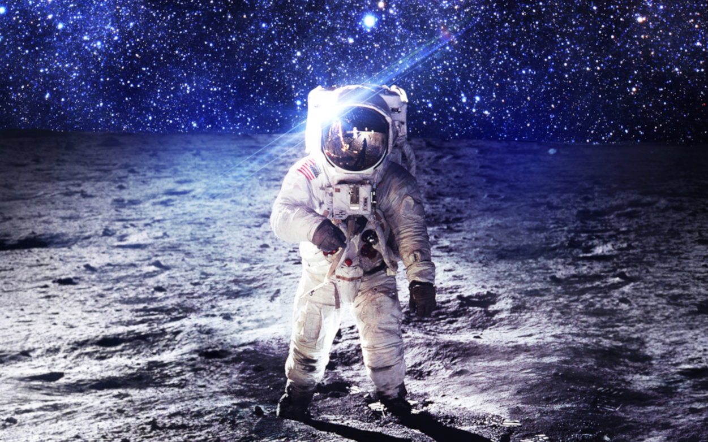

A NASA, sigla em inglês para National Aeronautics and Space Administration (Administração Nacional da Aeronáutica e Espaço), é a agência espacial dos Estados Unidos responsável pela pesquisa e exploração espacial civil. Fundada em 1958, a NASA tem como objetivo principal impulsionar a exploração do espaço, avançar no conhecimento científico, desenvolver tecnologias espaciais e promover a cooperação internacional no campo da exploração espacial. A NASA tem sido responsável por alguns dos marcos mais significativos na história da exploração espacial, incluindo o pouso na Lua durante o Programa Apollo, o lançamento do telescópio espacial Hubble e a operação contínua da Estação Espacial Internacional. Além disso, a NASA também conduz missões de exploração a outros planetas, estuda o clima da Terra e realiza pesquisas científicas em uma ampla variedade de disciplinas relacionadas ao espaço. Com uma missão contínua de expandir os limites do conhecimento humano e abrir caminho para futuras explorações espaciais, a NASA continua a ser uma das agências espaciais mais proeminentes e influentes do mundo.
A National Aeronautics and Space Administration (NASA) destaca-se como uma das agências espaciais mais renomadas e influentes do mundo, desempenhando um papel vital em nossa busca por compreender o universo e impulsionar a inovação tecnológica. Através de suas missões espaciais, a NASA não apenas amplia os horizontes da exploração humana, mas também catalisa avanços significativos em uma variedade de campos, desde a medicina até a comunicação. Ao explorar planetas distantes, asteroides e estrelas, a NASA nos proporciona uma visão sem precedentes do cosmos, expandindo nosso conhecimento sobre sua natureza e origem. Essas descobertas não apenas alimentam nossa curiosidade inata, mas também têm implicações profundas em nossa compreensão da vida e do universo em si. Além disso, a NASA é um farol de inovação tecnológica, impulsionando o desenvolvimento de novas tecnologias que transcendem os limites da exploração espacial. De materiais avançados a sistemas de propulsão revolucionários, essas tecnologias têm aplicações práticas que beneficiam a sociedade em geral, desde a medicina até a energia renovável. A importância da NASA também se estende além das fronteiras da ciência e da tecnologia. Suas realizações inspiram pessoas ao redor do mundo, motivando-as a sonhar grande e a perseguir seus próprios objetivos. Além disso, a agência desempenha um papel crucial na educação, promovendo o interesse pela ciência, tecnologia, engenharia e matemática (STEM) entre as gerações futuras. Por meio de colaborações internacionais e esforços compartilhados, a NASA demonstra o poder da cooperação global na busca pelo conhecimento e pela exploração do espaço. Ao unir forças com outras agências espaciais e países ao redor do mundo, a NASA não apenas amplia suas capacidades, mas também fortalece os laços entre nações e culturas diferentes. Em suma, a importância da NASA é multifacetada e abrangente, refletindo seu compromisso em desvendar os mistérios do universo, impulsionar a inovação tecnológica e inspirar as gerações presentes e futuras a alcançarem novas alturas.